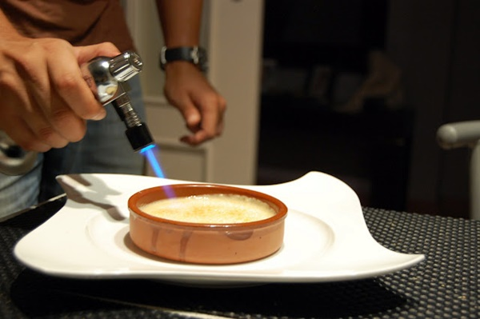

Volver a la pagina principal
Crema catalana
Ingredientes
- 8 huevos
- 200 gramos de azúcar
- 1 litro de leche
- 40 gramos de maicena
- 1 rama de canela
- 1 corteza de limón
- 1 vaina de vainilla
Pasos a seguir
- Primero mezclamos muy bien el azúcar con las yemas de huevo.
- En un cazo ponemos a calentar la leche con la piel de limón, la canela y la vaina de vainilla. Debe solo calentarse para poder infusionar, no debe hervir.
- En un vaso mezclamos la maicena con un poco de leche y agregamos esta mezcla a la leche inicial.

- Vamos moviendo hasta que este con el espesor que deseemos a fuego lento. Este es el punto de crear una crema pastelera perfecta.
- Ahora mezclamos la leche infusionada con la mezcla de yema y azúcar, antes hemos tenido que quitar las ramitas de canela y el limón.

- Vertemos la mezcla en cuencos y metemos al frigo a enfriar.

- Para caramelizar, ponemos una capa de azúcar por encima y con un soplete caramelizamos. Existen quemadores pero no es común encontrarlos en las casas, es algo más común usar sopletes.

Resultado Final